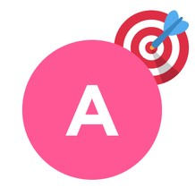

Декомпозиция целей: разбейте большие цели на более мелкие, управляемые задачи. Это делает их менее пугающими и более достижимыми.
Приоритеты и задачи играют ключевую роль в тайм-менеджменте, поскольку помогают организовать время и ресурсы для достижения желаемых результатов. Вот как можно эффективно работать с приоритетами и целями:
1. Установка целей
SMART-метод:
Specific
Цели должны быть четкими и понятными
Measurable
Должны быть критерии для оценки результатов

Achievable
Задача должна быть реалистичной
Relevant
Должна соответствовать общим целям
Time-bound
Должна иметь срок завершения
2. Разработка плана действий
Составление расписания: выделите время в своем календаре для работы над приоритетными задачами.
3. Регулярная переоценка
Еженедельный обзор: проводите регулярные проверки своих целей и задач, чтобы убедиться, что вы на правильном пути. Корректируйте планы при необходимости.
Гибкость: будьте готовы адаптировать свои приоритеты в зависимости от изменений в жизни или работе.
4. Использование технологий
Приложения для управления задачами: используйте инструменты, такие как Todoist, Trello или Asana, чтобы отслеживать задачи и устанавливать приоритеты.
Календарь: используйте цифровые календари для планирования времени на выполнение задач и встреч.
5. Баланс между работой и личной жизнью
Учитывайте личные цели и интересы наряду с профессиональными. Это поможет избежать выгорания и повысить общую удовлетворенность жизнью.